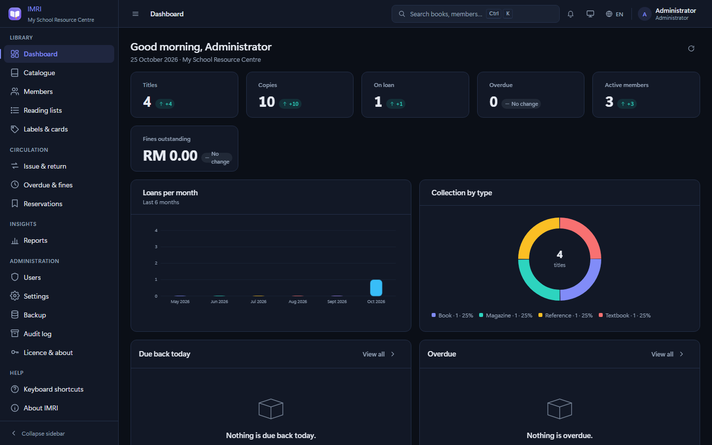
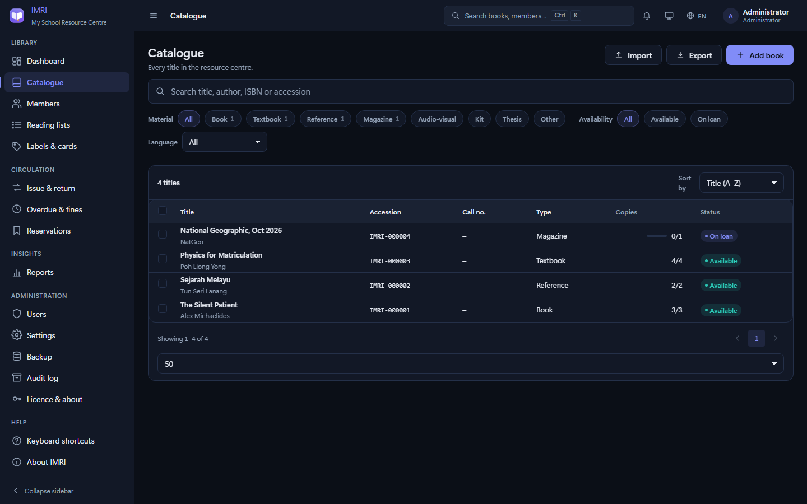
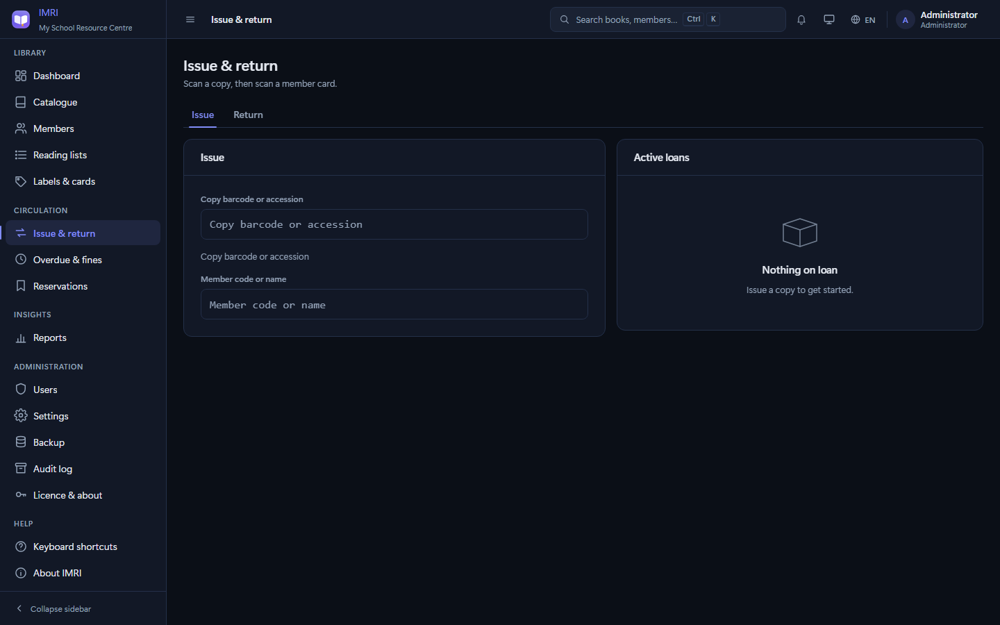
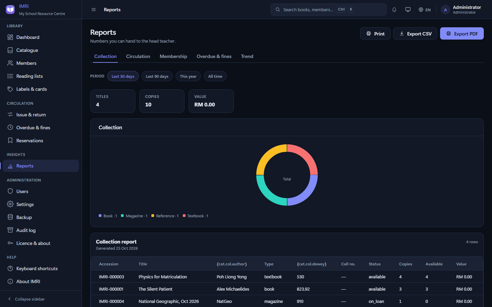

IMRI.
A complete, self-contained replacement for the paper borrowing register in a school library. It runs on one Windows PC, with no internet, no installer, no database server and no account to sign up for. The catalogue, the members, the loans, the fines, the reports — all of it lives in a single SQLite file you can copy onto a USB stick.
9.9 MB, single .exe · no install · no admin rights needed · Windows 10/11
Screens
What a librarian actually sees
Four of the twenty screens. Dark and light themes, English, Bahasa Melayu and 中文 throughout.




Scope
What it does
Everything a resource centre needs, and nothing it has to maintain.
📖Catalogue
Titles, authors, publishers, ISBN-10/13 with real check-digit validation, Dewey numbers, call numbers, subjects, cover images and per-copy records with their own barcode, accession number, location and condition. Duplicate detection by ISBN and title.
👥Members
Students and staff, class lists, IC numbers with validation, membership and expiry dates, suspension, a 360° profile showing loans, fines and reading list in one place, and a printable membership card with a QR code.
🔄Counter
Issue and return by scanning a barcode or typing an accession number. Every guard is enforced server-side: loan limits, suspended members, copies already out, copies held for someone else, duplicate active loans.
💰Fines
Per-day rates from settings, calculated from local dates — never UTC, or every evening in UTC+8 would be a day early. Part payments with sequential receipt numbers, waivers that require a written reason, full payment history per loan.
📋Reservations
A FIFO queue per title with gapless positions. When the last copy comes back the head of the queue is promoted to ready, the copy is set aside, and the hold expires on its own after the configured number of days.
🏷️Labels
QR codes — versions 1–10, with Reed–Solomon error correction and mask penalty scoring — and Code 39 barcodes, rendered as SVG and printed as A4 sheets. Both encoders written from scratch.
🔐Admin
Four roles — admin, librarian, assistant, viewer — with a capability matrix enforced on every endpoint. An append-only audit log that the database itself refuses to update or delete. Verified backups with a SHA-256 manifest and a guarded restore.
💳Hardware
Optional PC/SC smart-card readers via ctypes and winscard.dll, so a student card can be tapped instead of typing a code. IMRI works fully without it.
The constraint
Built for the school that has nothing
This is the design decision everything else follows from.
A resource centre may have no internet, no administrator rights, and a machine from 2014. Every dependency is a reason the software stops working for them. So there are none.
The backend is Python's standard library — http.server, sqlite3, hashlib, ctypes, zipfile, csv. There is no requirements.txt, because there are no requirements. The frontend is hand-written HTML, CSS and ES modules: no framework, no bundler, no node_modules, no CDN. Even the PDF writer and the QR encoder are written from scratch rather than installed.
IMRI binds to 127.0.0.1 only. It is not reachable from the network, and it does not phone home — no telemetry, no update check, no external request of any kind. You can run it on a PC that has never been online, which is exactly the PC it was built for.
Detail
The numbers, without rounding up
| Claim | Measured |
|---|---|
| Test suite | 180 tests, six modules, standard library only |
| Runtime dependencies | None. PyInstaller is needed to build, never to run. |
| Runtime binary | 9.9 MB, PyInstaller one-file |
| Scale tested | 10,000 members, 200,000 books |
| Full-collection report | 2.9 s at 200,000 books |
| Concurrent write p95 | 229 ms against a 250 ms budget |
| Interface languages | English, Bahasa Melayu, 中文 — 913 keys each |
| Outbound requests | Zero, by design |
Run it
Three ways in
The packaged build
Download IMRI.exe, put it in a folder, double-click it. It starts a private web server on a free port on 127.0.0.1, opens a chromeless window, and creates data\ beside itself — so the whole thing is portable. Copy the folder to another PC and the library goes with it.
From source
Python 3.11 or newer. No pip install.
python main.py
:: or, without the app window:
python main.py --no-window
:: self-test a deployment and exit:
python main.py --checkBacking up
Admin → Backup → Create. To move a library to another PC, copy the entire data\ folder. Restoring verifies the archive's SHA-256 manifest, refuses anything that would write outside the data folder, snapshots the current database first, and re-runs an integrity check afterwards.
Full documentation — architecture, build, tests, release process, and the v2 backlog — is in DEVELOPING.md.